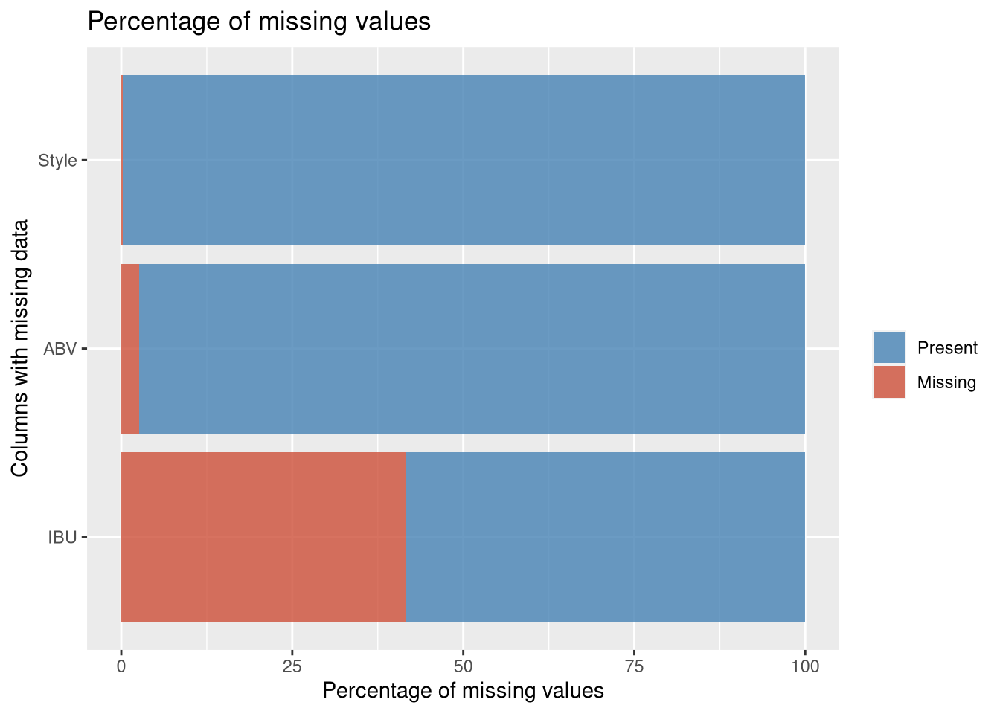
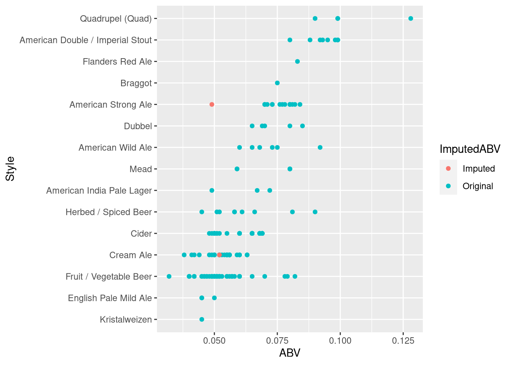
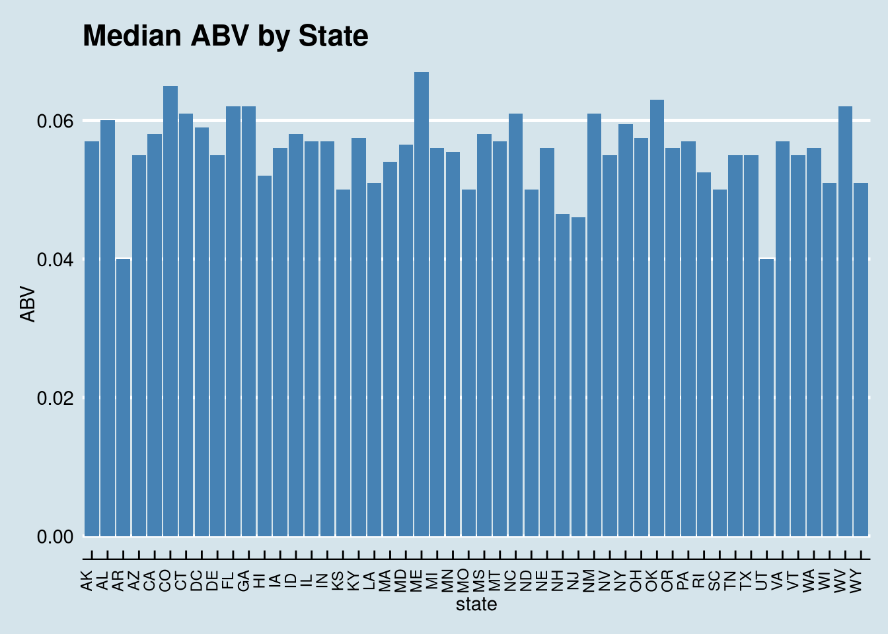
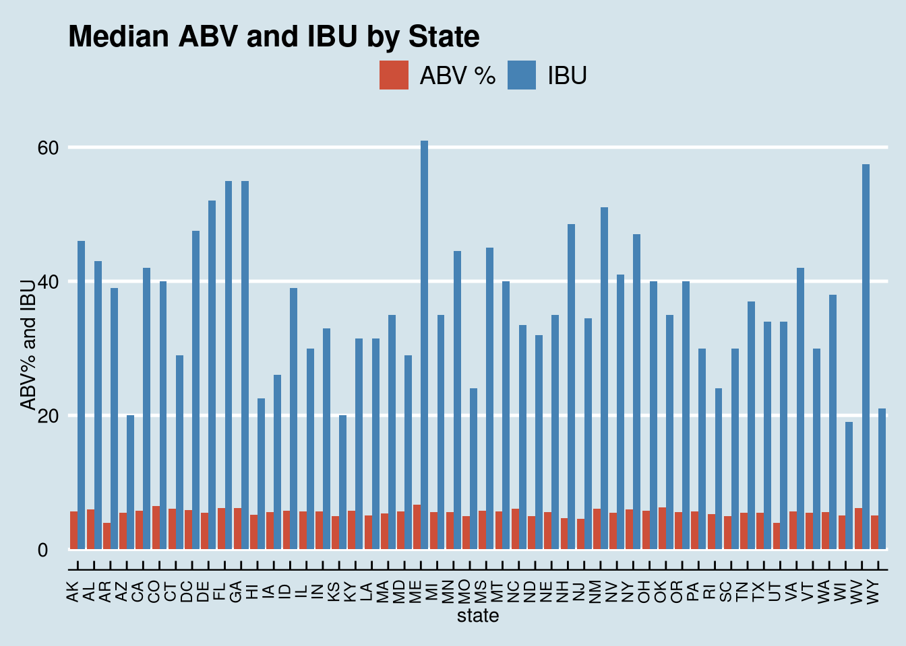
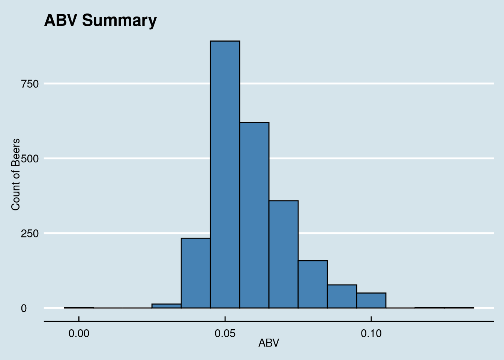

Beer: A ‘Case’ Study
Dustin Bracy and Tazeb Abera
10/26/2019
A Case Study of US Craft Beer and Breweries
Introduction and Overview
This case study explores datasets for various beers and breweries where they are produced in the US. The steps and procedures taken for this analysis are detailed below.
The initial data provided were in two separate datasets, one each for beers and the other breweries. The dataset combined into a single dataset using Full join.
Repository Structure
For Repository files, please see our Github
ReadMe.md: This is the base page for the repository, containing an introduction as well as our codebook for how we coded variable names throughout the datasets.BeerCaseStudy.Rmd: This is the primary file for the analysis, and is the file we are currently reading. It contains all the relevant R code, graphics, and analysis for the project; also included are specific .docx, .html, and .pdf knitted versions of this file.Beers.csvandBreweries.csv, were provided and are the original datasets from which our merged dataset is produced.
Reproduction of Analysis
README.md is the suggested place to start. It is also the possible method to downlaod this repository.
We begin by setting knitr options,
# Read in beer and breweries data set using _csv for more tidy output
Beers <- read_csv('./data/Beers.csv', col_types = cols())
Breweries <- read_csv('./data/Breweries.csv', col_types = cols())Research Questions
1. How many breweries are present in each state?
We can answer this question by counting the number of values of each State from the Breweries dataset.
# Format for output:
BPS <- data.frame(table(Breweries$State))
colnames(BPS) <- c('State','Breweries')
BrewPerState <- cbind(BPS[1:11,], BPS[12:22,], BPS[23:33,], BPS[34:44,], BPS[45:55,])
# Stylized output:
kable(BrewPerState, caption = 'Breweries per State') %>% kable_styling()| State | Breweries | State | Breweries | State | Breweries | State | Breweries | State | Breweries |
|---|---|---|---|---|---|---|---|---|---|
| AK | 7 | HI | 4 | MI | 32 | NV | 2 | UT | 4 |
| AL | 3 | IA | 5 | MN | 12 | NY | 16 | VA | 16 |
| AR | 2 | ID | 5 | MO | 9 | OH | 15 | VT | 10 |
| AZ | 11 | IL | 18 | MS | 2 | OK | 6 | WA | 23 |
| CA | 39 | IN | 22 | MT | 9 | OR | 29 | WI | 20 |
| CO | 47 | KS | 3 | NC | 19 | PA | 25 | WV | 1 |
| CT | 8 | KY | 4 | ND | 1 | RI | 5 | WY | 4 |
| DC | 1 | LA | 5 | NE | 5 | SC | 4 | ||
| DE | 2 | MA | 23 | NH | 3 | SD | 1 | ||
| FL | 15 | MD | 7 | NJ | 3 | TN | 3 | ||
| GA | 7 | ME | 9 | NM | 4 | TX | 28 |
# Set up the map:
Breweries <- rename(Breweries, state = State)
map <- Breweries %>% group_by(state) %>% summarise(Breweries = n())
# Plot Brewery heatmap:
plot_usmap(data=map, values = "Breweries", labels=F) +
labs(title = "Breweries per State") +
scale_fill_continuous(name = "Breweries") 2a. Merge beer data with the breweries data.
The field Brewery_id in Beers.csv and Brew_ID in Breweries.csv share the same data, but do not share a name. We remedy this by renaming the column in Beers.csv.
After renaming, we can merge them into a single dataset, using full_join.
# Rename Brewery_id to Brew_ID to satisfy merging requirement
Beers <- rename(Beers, Brew_ID = Brewery_id)
# Merge tables
Brewdata <- full_join(Beers, Breweries, by="Brew_ID")
# Change variable names to more meaningful title
Brewdata <- rename(Brewdata, Beer = Name.x, Brewery = Name.y, OZ = Ounces)
#Convert OZ to factor
Brewdata$OZ = as.factor(Brewdata$OZ)
beer <- Brewdata %>% filter(!is.na(IBU) & !is.na(ABV) & !is.na(Style))
ggplot(beer, aes(x=state, y=ABV)) + geom_boxplot(fill= "#75AADB")write.csv(beer, "beer.csv")
beer %>% filter(state %in% c('AZ'))## # A tibble: 23 x 10
## Beer Beer_ID ABV IBU Brew_ID Style OZ Brewery City state
## <chr> <dbl> <dbl> <dbl> <dbl> <chr> <fct> <chr> <chr> <chr>
## 1 Barrio B~ 2005 0.06 60 252 Americ~ 12 Barrio ~ Tucs~ AZ
## 2 Noche Du~ 2062 0.071 16 232 Americ~ 16 Borderl~ Tucs~ AZ
## 3 Sunbru K~ 2309 0.052 17 161 Kölsch 12 Four Pe~ Tempe AZ
## 4 Four Pea~ 1585 0.042 9 161 Fruit ~ 12 Four Pe~ Tempe AZ
## 5 Hop Knot~ 358 0.067 47 161 Americ~ 12 Four Pe~ Tempe AZ
## 6 Kilt Lif~ 179 0.06 21 161 Scotti~ 12 Four Pe~ Tempe AZ
## 7 Lumberya~ 1153 0.053 20 159 Americ~ 12 Lumbery~ Flag~ AZ
## 8 Camelback 2312 0.061 60 158 Americ~ 12 Phoenix~ Phoe~ AZ
## 9 Sex Pant~ 2599 0.069 20 31 Americ~ 12 SanTan ~ Chan~ AZ
## 10 Winter W~ 2073 0.095 25 31 Winter~ 16 SanTan ~ Chan~ AZ
## # ... with 13 more rows2b. Check the first and last 6 observations to verify the merged file.
To retrieve the first and last six observations from the combined data, we run head and tail on Brewdata, our combined dataset.
kable(Brewdata %>% head()) %>% kable_styling()| Beer | Beer_ID | ABV | IBU | Brew_ID | Style | OZ | Brewery | City | state |
|---|---|---|---|---|---|---|---|---|---|
| Pub Beer | 1436 | 0.050 | 409 | American Pale Lager | 12 | 10 Barrel Brewing Company | Bend | OR | |
| Devil’s Cup | 2265 | 0.066 | 178 | American Pale Ale (APA) | 12 | 18th Street Brewery | Gary | IN | |
| Rise of the Phoenix | 2264 | 0.071 | 178 | American IPA | 12 | 18th Street Brewery | Gary | IN | |
| Sinister | 2263 | 0.090 | 178 | American Double / Imperial IPA | 12 | 18th Street Brewery | Gary | IN | |
| Sex and Candy | 2262 | 0.075 | 178 | American IPA | 12 | 18th Street Brewery | Gary | IN | |
| Black Exodus | 2261 | 0.077 | 178 | Oatmeal Stout | 12 | 18th Street Brewery | Gary | IN |
kable(Brewdata %>% tail()) %>% kable_styling()| Beer | Beer_ID | ABV | IBU | Brew_ID | Style | OZ | Brewery | City | state |
|---|---|---|---|---|---|---|---|---|---|
| Rocky Mountain Oyster Stout | 1035 | 0.075 | 425 | American Stout | 12 | Wynkoop Brewing Company | Denver | CO | |
| Belgorado | 928 | 0.067 | 45 | 425 | Belgian IPA | 12 | Wynkoop Brewing Company | Denver | CO |
| Rail Yard Ale | 807 | 0.052 | 425 | American Amber / Red Ale | 12 | Wynkoop Brewing Company | Denver | CO | |
| B3K Black Lager | 620 | 0.055 | 425 | Schwarzbier | 12 | Wynkoop Brewing Company | Denver | CO | |
| Silverback Pale Ale | 145 | 0.055 | 40 | 425 | American Pale Ale (APA) | 12 | Wynkoop Brewing Company | Denver | CO |
| Rail Yard Ale (2009) | 84 | 0.052 | 425 | American Amber / Red Ale | 12 | Wynkoop Brewing Company | Denver | CO |
3. Address the missing values in each column.
To start, we first use a function (which returns true if a given value is NA, false otherwise, using is.na) and sapply to determine the number of missing values for each column within Brewdata. This gives us a raw data view of the missing data. We then plot the missing data to visualize the quantity.
# Explore missing values with kable library to make document more presentable:
MissingValues <- sapply(Brewdata, function(x)sum(is.na(x)))
MissingValues %>% kable("html") %>% kable_styling()| x | |
|---|---|
| Beer | 0 |
| Beer_ID | 0 |
| ABV | 62 |
| IBU | 1005 |
| Brew_ID | 0 |
| Style | 5 |
| OZ | 0 |
| Brewery | 0 |
| City | 0 |
| state | 0 |
# Missing values code borrowed from: https://jenslaufer.com/data/analysis/visualize_missing_values_with_ggplot.html
missing.values <- Brewdata %>% gather(key = "key", value = "val") %>%
mutate(isna = is.na(val)) %>% group_by(key) %>%
mutate(total = n()) %>% group_by(key, total, isna) %>%
summarise(num.isna = n()) %>% mutate(pct = num.isna / total * 100)
levels <- (missing.values %>% filter(isna == T) %>% arrange(desc(pct)))$key
percentage.plot <- missing.values %>% ggplot() + geom_bar(aes(x = reorder(key, desc(pct)), y = pct, fill=isna),
stat = 'identity', alpha=0.8) + scale_x_discrete(limits = levels) +
scale_fill_manual(name = "", values = c('steelblue', 'tomato3'), labels = c("Present", "Missing")) +
coord_flip() + labs(title = "Percentage of missing values", x = 'Columns with missing data', y = "Percentage of missing values")
percentage.plot
To tackle the low hanging fruit, we will remove 5 observations with missing styles, and mark the missing IBU/ABV values to compare later.
> 3/5 of these also have missing ABV and IBU values also.
> The ABV/IBU of the non-missings values aren’t remarkable, so their removal shouldn’t affect the overall data, but it is worth noting.
# remove the 5 beers missing style (3 of them were missing ABV/IBU also)
Brewdata %>% filter(is.na(Style))## # A tibble: 5 x 10
## Beer Beer_ID ABV IBU Brew_ID Style OZ Brewery City state
## <chr> <dbl> <dbl> <dbl> <dbl> <chr> <fct> <chr> <chr> <chr>
## 1 Special ~ 2210 NA NA 30 <NA> 16 Cedar Cre~ Seve~ TX
## 2 Kilt Lif~ 1635 0.06 21 161 <NA> 12 Four Peak~ Tempe AZ
## 3 OktoberF~ 2527 0.053 27 67 <NA> 12 Freetail ~ San ~ TX
## 4 The CROW~ 1796 NA NA 167 <NA> 32 Oskar Blu~ Long~ CO
## 5 CAN'D AI~ 1790 NA NA 167 <NA> 12 Oskar Blu~ Long~ CORemovedBrews <- Brewdata %>% filter(is.na(Style))
Brewdata <- Brewdata %>% filter(!is.na(Style))
# identify missing IBU/ABV values:
Brewdata$ImputedABV <- ifelse(is.na(Brewdata$ABV),'Imputed','Original')
Brewdata$ImputedIBU <- ifelse(is.na(Brewdata$IBU),'Imputed','Original')Now that we’ve marked the missing values, we can explore imputation of 62 missing ABV and 1005 missing IBU values into BrewComplete (so we can compare vs Brewdata).
# view random sample of imputed vs original plot ABV:
set.seed(10)
StyleSample <- sample(unique(BrewComplete$Style), size=15)
BrewComplete %>% filter(Style %in% StyleSample) %>% ggplot(aes(x=ABV, y=reorder(Style,ABV), color=ImputedABV)) + geom_point() + labs(y = 'Style')
# view random sample of imputed vs original plot IBU:
BrewComplete %>% filter(Style %in% StyleSample) %>% ggplot(aes(x=IBU, y=reorder(Style,IBU), color=ImputedIBU)) + geom_point() + labs(y = 'Style')# assign imputed ABV values
Brewdata$ABV <- BrewComplete$ABV
# store IBU containing dataset for further examination
IBUdata <- Brewdata %>% filter(!is.na(IBU))Based on visual inspection, it appears ABV is safe to impute, but IBU looks like it might be overreaching! (e.g. Cider Beer IBUs have no reference data for comparison)
We will exclude beer data with missing IBU for comparisons using IBU in future tests.
4. Compare the median alcohol content and international bitterness unit for each state.
Arkansas and Utah are tied for lowest ABV at 4.0% Maine has highest ABV at 6.7%
Wisconsin has the lowest IBU @ 19 Maine has the highest IBU @ 61
# 4.a transform the data
Firewater <- Brewdata %>% na.omit() %>% group_by(state) %>% summarise(Median = median(ABV)) %>% arrange(Median)
Bitter <- Brewdata %>% na.omit() %>% group_by(state) %>% summarise(Median = median(IBU)) %>% arrange(Median)
# 4.b Plot a bar chart to compare ABV by state
ggplot(data=Firewater, aes(x=state, y=Median)) +
geom_bar(stat="identity", fill="steelblue")+
theme_economist() +
scale_color_economist()+
theme(axis.text.x=element_text(size=rel(0.8), angle=90)) +
ggtitle("Median ABV by State") +
labs(x="state",y="ABV")
# 4.c Plot a bar chart to compare IBU by state
ggplot(data=Bitter, aes(x=state, y=Median)) +
geom_bar(stat="identity", fill="steelblue")+
theme_economist() +
scale_color_economist()+
theme(axis.text.x=element_text(size=rel(0.8), angle=90))+
ggtitle("Median IBU by State") +
labs(x="State",y="IBU")# Combined plot merging 4b and 4c:
Brewdata %>% filter(!is.na(IBU & ABV)) %>% select(state, ABV,IBU) %>%
group_by(state) %>%
dplyr::summarize(Median_IBU=median(IBU), Median_ABV=median(ABV*100)) %>%
gather(`Median_IBU`, `Median_ABV`, key='Type', value='Measurement') %>%
ggplot(aes(state, Measurement, fill=Type)) +
geom_bar(stat='identity', position = 'Dodge') +
labs(y='ABV% and IBU', title = 'Median ABV and IBU by State') +
theme_economist() +
scale_fill_manual(name = "", values = c('tomato3','steelblue'), labels = c("ABV %", "IBU")) +
scale_color_economist() +
theme(axis.text.x=element_text(size=rel(0.8), angle=90))
5. Which state has the maximum alcoholic (ABV) beer? Which state has the most bitter (IBU) beer?
We identify Colorado as having the beer with the highest ABV, at .128; and we identify Oregon has having the beer with the highest IBU, at 138.
TopABV <- top_n(Brewdata, 1, ABV)
TopIBU <- top_n(Brewdata, 1, IBU)
kable(TopABV) %>% kable_styling()| Beer | Beer_ID | ABV | IBU | Brew_ID | Style | OZ | Brewery | City | state | ImputedABV | ImputedIBU |
|---|---|---|---|---|---|---|---|---|---|---|---|
| Lee Hill Series Vol. 5 - Belgian Style Quadrupel Ale | 2565 | 0.128 | 52 | Quadrupel (Quad) | 19.2 | Upslope Brewing Company | Boulder | CO | Original | Imputed |
kable(TopIBU) %>% kable_styling()| Beer | Beer_ID | ABV | IBU | Brew_ID | Style | OZ | Brewery | City | state | ImputedABV | ImputedIBU |
|---|---|---|---|---|---|---|---|---|---|---|---|
| Bitter Bitch Imperial IPA | 980 | 0.082 | 138 | 375 | American Double / Imperial IPA | 12 | Astoria Brewing Company | Astoria | OR | Original | Original |
# Set up the map:
df <- data.frame(abbr=c('CO','OR'),Top_Beer=c('ABV','IBU'))
map <- left_join(statepop,df, by ='abbr')
# Plot the map:
plot_usmap(data = map, values = "Top_Beer") + labs(x='',y='',title = "Top States by ABV/IBU") +
scale_discrete_manual(labels(remove)) + scale_fill_manual(name = "Category", values=c(ABV='tomato3',IBU='steelblue'), na.value='darkgrey') + theme(legend.background = element_rect(fill = "#D5E4EB"), plot.background = element_rect(fill = "#D5E4EB"))7. Is there an apparent relationship between the bitterness of the beer and its alcoholic content?
We utilize ggplot to plot a scatter plot of the data, using IBU and ABV as our variables.
Examination of this scatter plot and the regression line suggests that there is a positive, linear relationship between IBU and ABV.
ggplot(Brewdata, aes(x=IBU, y= ABV)) +
geom_point(shape=1) +
geom_smooth(method=lm) +
theme_economist() +
scale_color_economist() +
theme(axis.text.x=element_text(size=rel(1.0))) +
labs(x="IBU",y="ABV", title="Correlation between IBU and ABV")cor.test(Brewdata$IBU, Brewdata$ABV)##
## Pearson's product-moment correlation
##
## data: Brewdata$IBU and Brewdata$ABV
## t = 33.848, df = 1401, p-value < 2.2e-16
## alternative hypothesis: true correlation is not equal to 0
## 95 percent confidence interval:
## 0.6408842 0.6985369
## sample estimates:
## cor
## 0.6707224It appears that there is some correlation between bitterness and ABV. The data shows a trend that generally as bitterness increases, so does alcohol content. However, alcohol content may increase with or without an increase in bitterness.
- Several of the highly bitter beers have considerably more alcohol in them than thier less bitter counterparts.
- Pearson’s R = .6706
- Pearson‚Äôs ùëÖ^2 = 45%
There is sufficient evidence (p-value <.0001) that the alcohol by volume (ABV) and International Bittering Units (IBU) are linearly correlated. We estimate that 45% of the variation in ABV is explained by IBU.
8. Investigate the difference with respect to IBU and ABV between IPAs (India Pale Ales) and other types of Ale (any beer with “Ale” in its name other than IPA). We will use KNN to classify each ‘ale’ as either an IPA or Other and provide statistical evidence to back up this claim.
Brewdata.impute.draft <- Brewdata.impute.draft %>% dplyr::rename(ABV.New = ABV)
Brewdata.impute.draft <- Brewdata.impute.draft %>% dplyr::rename(IBU.New = IBU)
Brewdata.New <- full_join(Brewdata, Brewdata.impute.draft, by = "Beer_ID")Ales.beer <- cbind(Brewdata.New, type='Ales', stringsAsFactors=F) %>% filter(grepl('\\bale\\b', Style, ignore.case=T))
IPA.beer <- cbind(Brewdata.New, type='IPA', stringsAsFactors=F) %>% filter(grepl('\\bIPA\\b', Style, ignore.case=T))
IPA.Ales <- union(Ales.beer, IPA.beer)
IPA.Ales$type <- as.factor(IPA.Ales$type) set.seed(100)
splitPerc = .7
iterations = 100
numks =50
masterAcc = matrix(nrow = iterations, ncol = numks)
for(j in 1:iterations) {
accs = data.frame(accuracy = numeric(numks), k = numeric(numks))
trainIndices = sample(1:dim(IPA.Ales)[1],round(splitPerc * dim(IPA.Ales)[1]))
train = IPA.Ales[trainIndices,]
test = IPA.Ales[-trainIndices,]
for(i in 1:numks) {
classifications = knn(train[,c('IBU.New','ABV.New')],test[,c('IBU.New','ABV.New')],as.factor(train$type), prob = TRUE, k = i)
table(as.factor(test$type),classifications)
CM = confusionMatrix(table(as.factor(test$type),classifications))
masterAcc[j,i] = CM$overall[1]
}
}
MeanAcc = colMeans(masterAcc)
plot(seq(1,numks,1),MeanAcc, type = "l")
k <- which.max(MeanAcc)classifications = knn(train[,c('IBU.New','ABV.New')],test[,c('IBU.New','ABV.New')],train$type, prob = TRUE, k)
table(test$type,classifications)## classifications
## Ales IPA
## Ales 249 39
## IPA 61 115confusionMatrix(table(test$type,classifications))## Confusion Matrix and Statistics
##
## classifications
## Ales IPA
## Ales 249 39
## IPA 61 115
##
## Accuracy : 0.7845
## 95% CI : (0.7442, 0.8211)
## No Information Rate : 0.6681
## P-Value [Acc > NIR] : 2.294e-08
##
## Kappa : 0.5309
##
## Mcnemar's Test P-Value : 0.03573
##
## Sensitivity : 0.8032
## Specificity : 0.7468
## Pos Pred Value : 0.8646
## Neg Pred Value : 0.6534
## Prevalence : 0.6681
## Detection Rate : 0.5366
## Detection Prevalence : 0.6207
## Balanced Accuracy : 0.7750
##
## 'Positive' Class : Ales
## 9. Additional Research.
# Reset Datafiles:
breweries <- read.csv("./data/Breweries.csv", header = TRUE, strip.white=TRUE)
beers <- read.csv("./data/Beers.csv", header = TRUE)
beers <- beers %>% dplyr::rename( Brew_ID = Brewery_id)
breweries <- breweries %>% dplyr::rename(Name_Brew = Name)
beers <- beers %>% dplyr::rename(Name_Beer = Name)
brew.beer <- full_join(breweries, beers, by = "Brew_ID")
brew.beerABVper <- mutate(brew.beer, ABVper = ABV * 100)# Build regional info:
brew.beerABVper$Region[brew.beerABVper$State == "ME"] <- "Northeast"
brew.beerABVper$Region[brew.beerABVper$State == "NH"] <- "Northeast"
brew.beerABVper$Region[brew.beerABVper$State == "VT"] <- "Northeast"
brew.beerABVper$Region[brew.beerABVper$State == "MA"] <- "Northeast"
brew.beerABVper$Region[brew.beerABVper$State == "RI"] <- "Northeast"
brew.beerABVper$Region[brew.beerABVper$State == "CT"] <- "Northeast"
brew.beerABVper$Region[brew.beerABVper$State == "NY"] <- "Northeast"
brew.beerABVper$Region[brew.beerABVper$State == "NJ"] <- "Northeast"
brew.beerABVper$Region[brew.beerABVper$State == "PA"] <- "Northeast"
brew.beerABVper$Region[brew.beerABVper$State == "ND"] <- "Midwest"
brew.beerABVper$Region[brew.beerABVper$State == "SD"] <- "Midwest"
brew.beerABVper$Region[brew.beerABVper$State == "NE"] <- "Midwest"
brew.beerABVper$Region[brew.beerABVper$State == "KS"] <- "Midwest"
brew.beerABVper$Region[brew.beerABVper$State == "MN"] <- "Midwest"
brew.beerABVper$Region[brew.beerABVper$State == "IA"] <- "Midwest"
brew.beerABVper$Region[brew.beerABVper$State == "MO"] <- "Midwest"
brew.beerABVper$Region[brew.beerABVper$State == "WI"] <- "Midwest"
brew.beerABVper$Region[brew.beerABVper$State == "IL"] <- "Midwest"
brew.beerABVper$Region[brew.beerABVper$State == "IN"] <- "Midwest"
brew.beerABVper$Region[brew.beerABVper$State == "MI"] <- "Midwest"
brew.beerABVper$Region[brew.beerABVper$State == "OH"] <- "Midwest"
brew.beerABVper$Region[brew.beerABVper$State == "OK"] <- "South"
brew.beerABVper$Region[brew.beerABVper$State == "TX"] <- "South"
brew.beerABVper$Region[brew.beerABVper$State == "AR"] <- "South"
brew.beerABVper$Region[brew.beerABVper$State == "LA"] <- "South"
brew.beerABVper$Region[brew.beerABVper$State == "MS"] <- "South"
brew.beerABVper$Region[brew.beerABVper$State == "KY"] <- "South"
brew.beerABVper$Region[brew.beerABVper$State == "TN"] <- "South"
brew.beerABVper$Region[brew.beerABVper$State == "AL"] <- "South"
brew.beerABVper$Region[brew.beerABVper$State == "FL"] <- "South"
brew.beerABVper$Region[brew.beerABVper$State == "GA"] <- "South"
brew.beerABVper$Region[brew.beerABVper$State == "SC"] <- "South"
brew.beerABVper$Region[brew.beerABVper$State == "NC"] <- "South"
brew.beerABVper$Region[brew.beerABVper$State == "VA"] <- "South"
brew.beerABVper$Region[brew.beerABVper$State == "WV"] <- "South"
brew.beerABVper$Region[brew.beerABVper$State == "MD"] <- "South"
brew.beerABVper$Region[brew.beerABVper$State == "DE"] <- "South"
brew.beerABVper$Region[brew.beerABVper$State == "WA"] <- "West"
brew.beerABVper$Region[brew.beerABVper$State == "OR"] <- "West"
brew.beerABVper$Region[brew.beerABVper$State == "CA"] <- "West"
brew.beerABVper$Region[brew.beerABVper$State == "AK"] <- "West"
brew.beerABVper$Region[brew.beerABVper$State == "HI"] <- "West"
brew.beerABVper$Region[brew.beerABVper$State == "AZ"] <- "West"
brew.beerABVper$Region[brew.beerABVper$State == "NV"] <- "West"
brew.beerABVper$Region[brew.beerABVper$State == "ID"] <- "West"
brew.beerABVper$Region[brew.beerABVper$State == "MT"] <- "West"
brew.beerABVper$Region[brew.beerABVper$State == "WY"] <- "West"
brew.beerABVper$Region[brew.beerABVper$State == "CO"] <- "West"
brew.beerABVper$Region[brew.beerABVper$State == "NM"] <- "West"
brew.beerABVper$Region[brew.beerABVper$State == "UT"] <- "West"Compare Region, City and Brewery Stats
# Calculate mean ABV by Region
bbABVper.clean <- brew.beerABVper %>% filter(!is.na(brew.beerABVper$ABVper))
bbABVper.cleanmea <- aggregate(bbABVper.clean$ABVper, by=list(bbABVper.clean$Region), FUN = mean)
colnames(bbABVper.cleanmea) <- c("Region", "MeanABV")
bbABVper.cleanmea$MeanABV <- round(bbABVper.cleanmea$MeanABV, 2)
# Calculate mean IBU by Region
bbIBU.clean <- brew.beerABVper %>% filter(!is.na(brew.beerABVper$IBU))
bbIBU.cleanmed <- aggregate(bbIBU.clean$IBU, by=list(bbIBU.clean$Region), FUN = median)
colnames(bbIBU.cleanmed) <- c("Region", "MedianIBU")
bbIBU.cleanmea <- aggregate(bbIBU.clean$IBU, by=list(bbIBU.clean$Region), FUN = mean)
colnames(bbIBU.cleanmea) <- c("Region", "MeanIBU")
# Calculate Top 10 Cities with the most Breweries
TopCities <- Brewdata %>% mutate(City = paste0(City, ', ', state)) %>% group_by(City) %>%
summarise(Breweries = n()) %>% arrange(desc(Breweries))
# Calculate Top 10 Breweries with the most original beers
TopBreweries <- Brewdata %>% mutate(Brewery = paste0(Brewery,'<br>', City, ', ', state)) %>%
group_by(Brewery) %>% summarise(Beers = n()) %>% arrange(desc(Beers))
Top10Cities <- top_n(TopCities,10)## Selecting by BreweriesTop10Breweries <- top_n(TopBreweries,10)## Selecting by BeersBuild the plots
charts <- list()
charts[['zero']] <- ''
charts[['meanABVbyRegion']] <-
hchart(bbABVper.cleanmea, "column", hcaes(x = Region, y = MeanABV)) %>%
hc_title(text = "Average ABV by Region") %>%
hc_add_theme(hc_theme_economist())
charts[['MedianIBUbyRegion']] <-
hchart(bbIBU.cleanmed, "column", hcaes(x = Region, y = MedianIBU)) %>%
hc_title(text = "Median IBU by Region") %>%
hc_add_theme(hc_theme_economist())
charts[['top10byCity']] <-
hchart(Top10Cities, "column", hcaes(x = City, y = Breweries)) %>%
hc_title(text = "Top 10 Cities with Most Breweries") %>%
hc_add_theme(hc_theme_economist())
charts[['top10byBrewery']] <-
hchart(Top10Breweries, "column", hcaes(x = Brewery, y = Beers)) %>%
hc_title(text = "Top 10 Breweries with Most Original Beers") %>%
hc_add_theme(hc_theme_economist())
# TopBreweries <- Brewdata %>% mutate(Brewery = paste0(Brewery,'<br>', City, ', ', state)) %>%
# group_by(Brewery) %>% summarise(Beers = n()) %>% arrange(desc(Beers))
# ggplot(data=Brewdata, mapping=aes(x=Brewery, y=Beers)) + geom_col() + theme_economist() +
# labs(title = "Top 10 Breweries with Most Original Beers")Visualization of our additional research!
htmltools::tagList(charts)<
< # TopBreweries <- Brewdata %>% mutate(Brewery = paste0(Brewery,'\n', City, ', ', state)) %>%
# group_by(Brewery) %>% summarise(Beers = n()) %>% arrange(desc(Beers)) %>% top_n(10)
# ggplot(data=TopBreweries, mapping=aes(x=Brewery, y=Beers)) + geom_col(color="white",fill="steelblue") +
# theme_economist() +labs(title = "Top 10 Breweries with Most Original Beers") +
# theme(axis.text.x = element_text(angle = 60, vjust=1, hjust=1))
6. Comments on the summary statistics and distribution of the ABV variable.
We get summary statistics by calling
summaryandsdon theABVcolumn in ourBrewdatadataset.The ABV of all measured beer falls into a range of .1% to 12.8% alcohol content by volume. The data appears to be fairly normally distributed with a touch of right skewness, with a mean of 5.97%, a median of 5.60%, a standard deviation of 1.35% and an interquartile range of 1.7%.

ABV of all measured beer falls into a range of .1% to 12.8% alcohol content by volume. The data appears to be fairly normally distributed with a touch of right skewness, with a mean of 5.97%, a median of 5.60%, a standard deviation of 1.35% and an interquartile range of 1.7%.